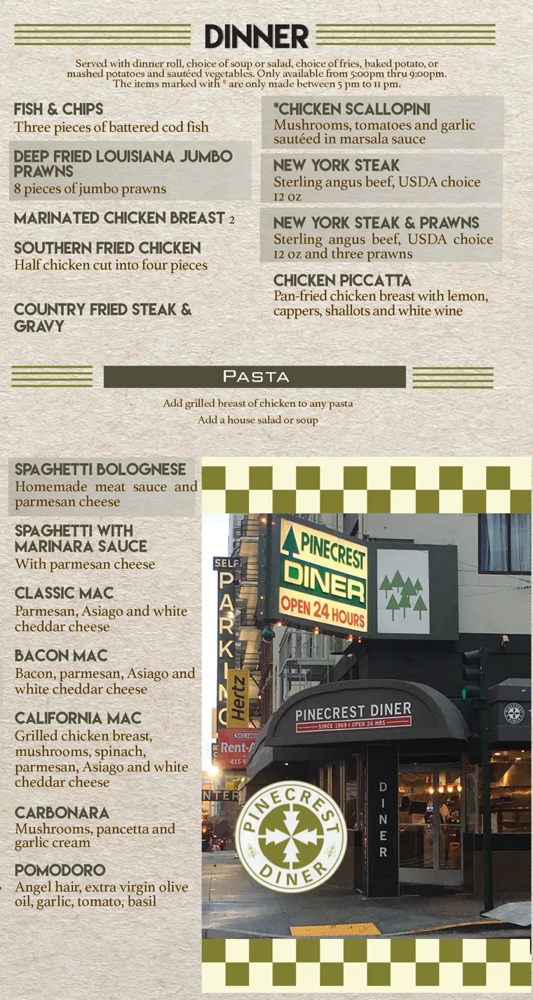

Project focus
Present dinner choices and pasta dishes in a recognizable diner style, using the restaurant’s own visual identity.
A dinner and pasta menu composition that carries the diner’s olive palette, checkerboard details, and storefront identity into the menu.
Open the full archived image
Present dinner choices and pasta dishes in a recognizable diner style, using the restaurant’s own visual identity.
Section headings separate dinner and pasta, while the restaurant photograph connects the menu to the place itself. The olive accents and checkerboard create a consistent visual thread.
From our project archive. Layouts and content reflect the original project files.
This project record shows the dinner and pasta menu artwork. Select the image to inspect the full composition.
Online Menu + QR turns your PDF or photo menu into a mobile menu page and a QR code.